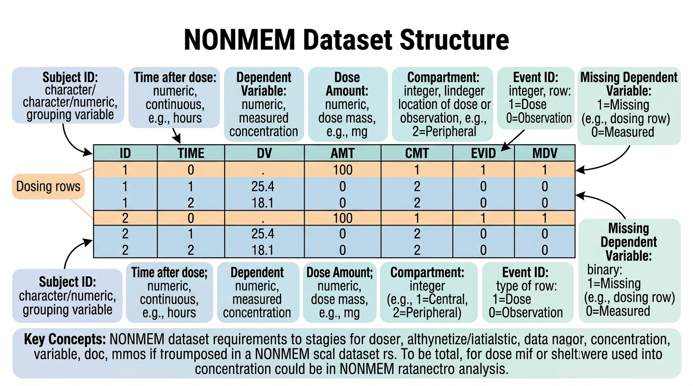
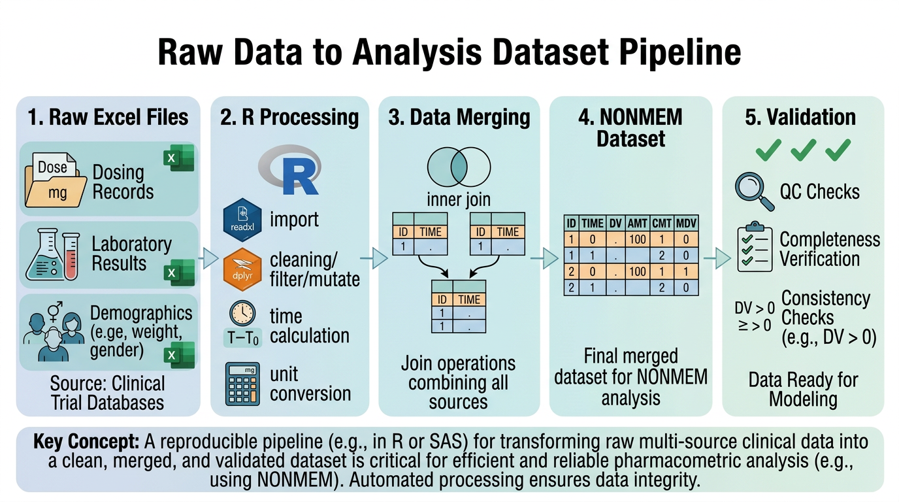
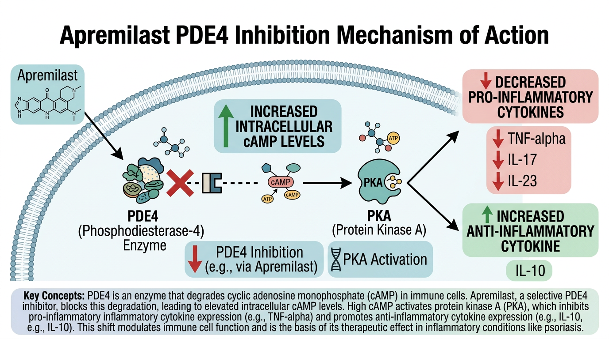

# 이 장에서 사용하는 패키지
library(tidyverse) # dplyr, tidyr, stringr, readr 등 포함
library(lubridate) # 날짜/시간 처리
library(readxl) # Excel 파일 읽기
library(haven) # SAS 데이터셋 읽기7 원시 데이터에서 분석용 데이터셋 구축
이 장에서는 임상시험에서 수집된 원시 데이터(raw data)를 약동학 분석에 사용할 수 있는 분석용 데이터셋(analysis-ready dataset)으로 변환하는 전 과정을 다룹니다. 특히 비구획분석(NCA)과 집단약동학(Population PK) 모델링에 사용되는 NONMEM 데이터셋 형식을 중심으로 학습합니다.
이 장의 실습 예제에서는 건선 치료에 사용되는 PDE4 억제제 Apremilast의 Phase I 임상시험 데이터를 활용합니다.
7.1 임상시험 데이터 구조
7.1.1 CDISC 표준 개요
임상시험 데이터는 국제적으로 CDISC(Clinical Data Interchange Standards Consortium) 표준에 따라 구조화됩니다. 이 표준은 규제기관(FDA, EMA, MFDS 등) 제출용 데이터의 형식을 통일하여 검토 효율성을 높이기 위해 개발되었습니다.
SDTM (Study Data Tabulation Model)은 임상시험에서 수집된 원시 데이터를 표준화된 형태로 정리한 것입니다. 주요 도메인(domain)은 다음과 같습니다:
| 도메인 코드 | 도메인 명칭 | 설명 |
|---|---|---|
| DM | Demographics | 인구통계학 정보 (나이, 성별, 인종, 체중 등) |
| EX | Exposure | 투약 정보 (투약 시간, 용량, 경로 등) |
| PC | Pharmacokinetics Concentrations | 약물 농도 데이터 |
| PP | Pharmacokinetics Parameters | NCA 파라미터 결과 |
| LB | Laboratory Test Results | 임상 검사 결과 |
| AE | Adverse Events | 이상반응 |
| VS | Vital Signs | 활력징후 |
ADaM (Analysis Data Model)은 SDTM 데이터를 기반으로 통계 분석에 직접 사용할 수 있도록 가공한 데이터셋입니다. PK 분석에 자주 사용되는 ADaM 데이터셋은 다음과 같습니다:
- ADSL: Subject-Level Analysis Dataset (대상자 수준 요약)
- ADPC: Pharmacokinetic Concentration Analysis Dataset (농도 데이터)
- ADPP: Pharmacokinetic Parameter Analysis Dataset (파라미터 데이터)
- ADNCA: NCA Analysis Dataset
노트실무에서의 데이터 형태
실제 임상시험에서 여러분이 받게 되는 데이터는 CDISC 표준 형식이 아닌 경우가 많습니다. 특히 연구자 주도 임상시험(Investigator-Initiated Trial, IIT)에서는 Excel 파일이나 CSV 파일로 데이터가 제공되는 경우가 흔합니다. 이 장에서는 이러한 비표준 형식의 원시 데이터를 분석용 데이터셋으로 변환하는 과정을 중점적으로 다룹니다.
7.1.2 SDTM 도메인 간 관계
PK 분석을 위해서는 여러 SDTM 도메인의 데이터를 결합해야 합니다. 기본적으로 다음 세 가지 도메인이 핵심입니다:
- DM (Demographics): 대상자의 기본 정보 — ID, 나이, 성별, 체중, 인종
- EX (Exposure): 투약 기록 — 투약 시간, 용량, 투여 경로
- PC (Pharmacokinetics Concentrations): 채혈 및 농도 측정 — 채혈 시간, 약물 농도
# SDTM 스타일 데이터 예시: DM 도메인
dm <- tibble(
USUBJID = paste0("APR-", sprintf("%03d", 1:12)),
AGE = c(28, 35, 42, 31, 55, 38, 47, 29, 33, 40, 36, 51),
SEX = rep(c("M", "F"), 6),
RACE = c(rep("ASIAN", 8), rep("WHITE", 4)),
WEIGHT = c(68, 55, 78, 62, 82, 58, 71, 64, 75, 67, 59, 85),
HEIGHT = c(172, 160, 178, 165, 175, 158, 180, 168, 176, 170, 163, 182),
ARMCD = rep(c("APR10", "APR20", "APR30"), each = 4)
)
dm# SDTM 스타일 데이터 예시: EX 도메인
ex <- tibble(
USUBJID = paste0("APR-", sprintf("%03d", 1:12)),
EXSTDTC = "2024-03-15T08:00",
EXENDTC = "2024-03-15T08:00",
EXDOSE = rep(c(10, 20, 30), each = 4),
EXDOSU = "mg",
EXROUTE = "ORAL",
EXDOSFRM = "TABLET"
)
ex7.2 NONMEM 데이터셋 형식 이해

7.2.1 NONMEM이란
NONMEM(NONlinear Mixed Effects Modeling)은 집단약동학(Population PK) 모델링에 가장 널리 사용되는 소프트웨어입니다. 비선형 혼합효과 모형(nonlinear mixed-effects model)을 통해 개인 간 변동(inter-individual variability)과 개인 내 변동(intra-individual variability)을 동시에 추정할 수 있습니다.
NONMEM 분석을 위해서는 특정 형식의 데이터셋이 필요하며, 이 형식은 NCA 분석에도 광범위하게 활용됩니다. 따라서 NONMEM 데이터셋 형식을 이해하는 것은 PK 데이터 분석의 기본입니다.
7.2.2 필수 컬럼 (Required Columns)
NONMEM 데이터셋의 필수 컬럼은 다음과 같습니다:
| 컬럼명 | 설명 | 값의 범위/예시 |
|---|---|---|
| ID | 대상자 식별 번호 | 1, 2, 3, … (양의 정수) |
| TIME | 시간 (보통 첫 투약 기준 상대시간, 단위: hour) | 0, 0.5, 1, 2, 4, … |
| DV | 종속변수 (Dependent Variable): 약물 농도 | ng/mL 단위의 농도값 |
| AMT | 투약량 (Amount): 투여된 약물의 양 | mg 단위의 투여량 |
| CMT | 구획 번호 (Compartment): 어느 구획에 대한 레코드인지 | 1 (투약), 2 (관측) 등 |
| EVID | 이벤트 식별 번호 (Event ID) | 0, 1, 2, 3, 4 |
| MDV | 누락 종속변수 (Missing Dependent Variable) | 0 또는 1 |
중요EVID와 MDV의 관계
EVID와 MDV는 NONMEM 데이터셋에서 가장 혼동하기 쉬운 컬럼입니다. 핵심 규칙은 다음과 같습니다:
- 투약 이벤트 (EVID=1): AMT에 투여량 기입, DV는 보통 0 또는 빈값, MDV=1 (종속변수 없음)
- 관측 이벤트 (EVID=0): AMT=0 또는 빈값, DV에 농도값 기입, MDV=0 (종속변수 있음)
- MDV=1이면 NONMEM은 해당 행의 DV를 무시합니다
- BLQ 관측값의 처리에 따라 MDV 값이 달라질 수 있습니다
7.2.3 EVID 코드 상세 설명
EVID(Event ID)는 각 레코드가 어떤 종류의 이벤트인지를 나타냅니다:
EVID = 0: 관측 이벤트 (Observation Event)
가장 기본적인 이벤트 유형입니다. 약물 농도를 측정한 채혈 시점의 기록입니다.
ID TIME DV AMT EVID MDV
1 0.5 125.3 0 0 0
1 1.0 310.8 0 0 0
1 2.0 485.2 0 0 0EVID = 1: 투약 이벤트 (Dosing Event)
약물이 투여된 시점의 기록입니다. AMT에 투여량이 기입됩니다.
ID TIME DV AMT EVID MDV
1 0 0 30 1 1EVID = 2: 기타 이벤트 (Other-Type Event)
모델에서 특별한 처리가 필요한 이벤트입니다. 예를 들어, 특정 시점에서 구획의 양을 리셋하지 않고 모델의 상태를 확인하고 싶을 때 사용합니다.
EVID = 3: 리셋 이벤트 (Reset Event)
모든 구획의 약물량을 0으로 리셋합니다. 장기간 워시아웃(washout) 후 새로운 투약을 시작할 때 유용합니다.
EVID = 4: 리셋 + 투약 이벤트 (Reset and Dose Event)
EVID=3과 EVID=1을 동시에 수행합니다. 모든 구획을 리셋한 후 새로 투약합니다.
# EVID 유형별 레코드 예시
evid_examples <- tibble(
ID = c(1, 1, 1, 1, 1, 1, 1, 1, 1),
TIME = c(0, 0.5, 1, 2, 4, 168, 168, 168.5, 169),
DV = c(0, 125, 310, 485, 280, 0, 0, 95, 250),
AMT = c(30, 0, 0, 0, 0, 0, 30, 0, 0),
EVID = c(1, 0, 0, 0, 0, 3, 1, 0, 0),
MDV = c(1, 0, 0, 0, 0, 1, 1, 0, 0)
)
# EVID=3 (TIME=168): 워시아웃 후 리셋
# EVID=1 (TIME=168): 재투약
evid_examples7.2.4 추가 컬럼 (Additional Columns)
기본 컬럼 외에 다양한 추가 컬럼이 사용됩니다:
| 컬럼명 | 설명 | 용도 |
|---|---|---|
| RATE | 주입 속도 (mg/h) | 정맥 주입(IV infusion) 시 사용 |
| SS | 정상상태 (Steady-State) 플래그 | SS=1이면 정상상태 도달 가정 |
| II | 투약 간격 (Interdose Interval, h) | 반복 투약의 간격 |
| ADDL | 추가 투약 횟수 (Additional Doses) | II와 함께 반복 투약 기록 |
| BLQ | 정량한계 미만 플래그 | BLQ=1이면 정량한계 미만 |
| TAD | 투약 후 경과 시간 (Time After Dose) | 반복 투약 시 유용 |
| WT | 체중 (kg) | 공변량(covariate) |
| AGE | 나이 (years) | 공변량 |
| SEX | 성별 | 공변량 (0=남, 1=여 등) |
| DOSE | 투약 용량 (mg) | 용량군 식별 |
힌트SS, II, ADDL의 활용
반복 투약(multiple dosing)을 기록할 때, 매 투약 시점을 모두 개별 행으로 기록하는 것은 비효율적입니다. 예를 들어, Apremilast 30mg을 1일 2회, 28일간 투약하면 총 56회의 투약 기록이 필요합니다. 이를 SS, II, ADDL로 간단히 표현할 수 있습니다:
ID TIME AMT EVID SS II ADDL
1 0 30 1 0 12 55이 한 줄은 “TIME=0에 30mg을 투약하고, 12시간 간격으로 55회 추가 투약”을 의미합니다.
정상상태에 도달한 후의 데이터만 분석할 경우:
ID TIME AMT EVID SS II
1 0 30 1 1 12SS=1은 “이 투약 시점에서 이미 정상상태에 도달한 것으로 가정”함을 의미합니다.
7.2.5 투약 이벤트 vs 관측 이벤트
NONMEM 데이터셋의 각 행은 투약 이벤트(dosing event) 또는 관측 이벤트(observation event) 중 하나입니다. 이 두 유형의 이벤트를 정확히 구분하는 것이 데이터셋 구축의 핵심입니다.
# 완성된 NONMEM 데이터셋 예시 (대상자 1명)
nonmem_example <- tibble(
ID = 1,
TIME = c(0, 0.5, 1, 2, 4, 6, 8, 12, 24),
DV = c(0, 125.3, 310.8, 485.2, 380.1, 220.5, 145.8, 62.3, 10.2),
AMT = c(30, 0, 0, 0, 0, 0, 0, 0, 0),
CMT = c(1, 2, 2, 2, 2, 2, 2, 2, 2),
EVID = c(1, 0, 0, 0, 0, 0, 0, 0, 0),
MDV = c(1, 0, 0, 0, 0, 0, 0, 0, 0),
DOSE = 30,
WT = 68,
AGE = 28,
SEX = 0 # 0 = Male
)
nonmem_example7.3 시간 변수 처리
7.3.1 절대시간 vs 상대시간
임상시험에서 시간은 두 가지 형태로 기록됩니다:
- 절대시간(Absolute Time): 실제 날짜와 시각 (예: “2024-03-15 08:30:00”)
- 상대시간(Relative Time): 기준 시점으로부터의 경과 시간 (예: 0.5시간)
NONMEM 데이터셋에서는 상대시간을 사용합니다. 기준 시점(TIME=0)은 보통 첫 투약 시점으로 설정합니다.
7.3.2 절대시간에서 상대시간 계산
# 절대시간 데이터 예시
pk_raw <- tibble(
USUBJID = rep("APR-001", 9),
DATETIME = ymd_hm(c(
"2024-03-15 08:00", # 투약 시점
"2024-03-15 08:30", # 0.5h
"2024-03-15 09:00", # 1h
"2024-03-15 10:00", # 2h
"2024-03-15 12:00", # 4h
"2024-03-15 14:00", # 6h
"2024-03-15 16:00", # 8h
"2024-03-15 20:00", # 12h
"2024-03-16 08:00" # 24h
)),
EVENT = c("DOSE", rep("SAMPLE", 8)),
CONC = c(NA, 125.3, 310.8, 485.2, 380.1, 220.5, 145.8, 62.3, 10.2)
)
# 상대시간 계산
pk_raw <- pk_raw |>
mutate(
# 첫 투약 시점을 기준으로 상대시간 계산
first_dose_time = min(DATETIME[EVENT == "DOSE"]),
TIME = as.numeric(difftime(DATETIME, first_dose_time, units = "hours"))
)
pk_raw |> select(USUBJID, DATETIME, EVENT, CONC, TIME)7.3.3 TAD (Time After Dose) 계산
반복 투약 시험에서는 TIME(첫 투약 후 절대 경과 시간)과 함께 TAD(가장 최근 투약 후 경과 시간)가 필요합니다. TAD는 여러 투약 주기의 농도-시간 프로파일을 중첩하여 비교할 때 유용합니다.
# 반복 투약 데이터에서 TAD 계산
pk_multiple_dose <- tibble(
ID = 1,
TIME = c(0, 0.5, 1, 2, 4, 12, 12.5, 13, 14, 16, 24, 24.5, 25, 26, 28),
EVID = c(1, 0, 0, 0, 0, 1, 0, 0, 0, 0, 1, 0, 0, 0, 0),
AMT = c(30, 0, 0, 0, 0, 30, 0, 0, 0, 0, 30, 0, 0, 0, 0),
DV = c(0, 125, 310, 485, 380, 0, 130, 325, 490, 385, 0, 128, 318, 480, 375)
)
# TAD 계산 함수
calculate_tad <- function(data) {
data |>
mutate(
# 투약 시점의 TIME을 기록
dose_time = if_else(EVID == 1, TIME, NA_real_)
) |>
# 아래로 채우기 (fill down)
fill(dose_time, .direction = "down") |>
mutate(
TAD = TIME - dose_time
)
}
pk_with_tad <- calculate_tad(pk_multiple_dose)
pk_with_tad |> select(ID, TIME, EVID, DV, TAD)
경고시간 계산 시 주의사항
시간 변수를 다룰 때 다음 사항에 주의해야 합니다:
- 시간대(Time Zone): 다기관 임상시험에서는 각 기관의 시간대가 다를 수 있습니다. 모든 시간을 하나의 시간대(보통 UTC)로 통일해야 합니다.
- 일광절약시간(DST): 일광절약시간 전환 시 1시간의 차이가 발생할 수 있습니다.
lubridate의force_tz()함수를 활용하세요. - 자정 전후: 채혈이 자정을 넘어가는 경우, 날짜가 바뀌는 것을 정확히 반영해야 합니다.
- 소수점 정밀도: 시간을 분(minute)으로 기록한 후 시간(hour)으로 변환할 때, 소수점 이하 자릿수에 주의하세요.
7.3.4 날짜/시간 파싱과 변환
# 다양한 날짜/시간 형식 파싱
time_formats <- tibble(
format_type = c("ISO 8601", "한국식", "미국식", "시간만"),
raw_string = c("2024-03-15T08:30:00", "2024년 3월 15일 08시 30분",
"03/15/2024 8:30 AM", "08:30"),
parsed = c(
ymd_hms("2024-03-15T08:30:00"),
ymd_hm("2024-03-15 08:30"), # parse_date_time 사용 가능
mdy_hm("03/15/2024 8:30"),
NA # 날짜 정보 없이 시간만으로는 절대시간 계산 불가
)
)
# 실제 임상시험 데이터에서 흔히 보는 형식
clinical_times <- c("15MAR2024:08:30:00", "15MAR2024:09:00:00")
parsed_times <- dmy_hms(clinical_times)
parsed_times
# 상대시간(시간 단위) 계산
relative_hours <- as.numeric(difftime(parsed_times, parsed_times[1], units = "hours"))
relative_hours7.4 BLQ 처리
7.4.1 BLQ란 무엇인가
BLQ(Below the Limit of Quantification)는 약물 농도가 분석법의 정량한계(LLOQ, Lower Limit of Quantification) 미만인 관측값을 의미합니다. 약물 투여 후 충분한 시간이 경과하면 혈중 농도가 LLOQ 아래로 떨어지게 됩니다. 이러한 BLQ 데이터를 어떻게 처리하느냐에 따라 PK 파라미터 추정 결과가 달라질 수 있습니다.
예를 들어, Apremilast의 LLOQ가 1 ng/mL이라면, 1 ng/mL 미만의 측정값은 정확한 정량이 불가능하며 “BLQ”로 기록됩니다.
7.4.2 M1~M7 방법 상세 비교
BLQ 데이터 처리에는 여러 방법이 제안되어 있으며, 각각의 장단점이 있습니다:
| 방법 | 처리 방식 | 장점 | 단점 | 적용 상황 |
|---|---|---|---|---|
| M1 | BLQ를 0으로 대체 | 단순, 보수적 | AUC 과소 추정 가능 | NCA에서 흔히 사용 |
| M2 | BLQ를 LLOQ/2로 대체 | 단순, M1보다 현실적 | 통계적 근거 약함 | 탐색적 분석 |
| M3 | BLQ를 결측으로 처리하고, 모델에서 좌측 절단(left censoring)으로 다룸 | 통계적으로 가장 적절 | 구현 복잡 | Population PK 모델링 |
| M4 | BLQ를 LLOQ/2로 대체 (첫 BLQ만), 이후는 결측 | M2와 M7의 절충 | 규칙이 자의적 | 드물게 사용 |
| M5 | BLQ를 결측으로 처리 (단순 제거) | 가장 단순 | 정보 손실, 편향 가능 | NCA에서 말기 BLQ |
| M6 | BLQ를 LLOQ로 대체 | 보수적 | AUC 과대 추정 | 드물게 사용 |
| M7 | 투약 전 BLQ는 0, 내삽(embedded) BLQ는 LLOQ/2, 말기 BLQ는 결측 | 시점별 맞춤 처리 | 규칙 복잡 | NCA에서 권장 |
힌트NCA에서의 BLQ 처리 권장 사항
비구획분석(NCA)에서는 M1 또는 M7 방법이 가장 흔히 사용됩니다. FDA 가이던스에서는 일반적으로 다음을 권장합니다:
- 투약 전(pre-dose) BLQ: 0으로 대체
- 두 정량 가능한 값 사이의 BLQ (embedded BLQ): LLOQ/2로 대체 또는 결측 처리
- 마지막 정량 가능 농도 이후의 BLQ (terminal BLQ): 결측으로 처리 (분석에서 제외)
이는 M7 방법과 유사합니다. 집단약동학 모델링에서는 M3 방법이 통계적으로 가장 적절합니다.
7.4.3 R에서 BLQ 처리 구현
# BLQ가 포함된 데이터 예시
pk_with_blq <- tibble(
ID = 1,
TIME = c(0, 0.5, 1, 2, 4, 6, 8, 12, 24, 36, 48),
CONC_RAW = c(NA, 125.3, 310.8, 485.2, 380.1, 220.5, 145.8, 62.3, 10.2, NA, NA),
BLQ_FLAG = c(1, 0, 0, 0, 0, 0, 0, 0, 0, 1, 1), # 1 = BLQ
LLOQ = 1.0 # ng/mL
)
# M1: BLQ → 0
pk_m1 <- pk_with_blq |>
mutate(DV = if_else(BLQ_FLAG == 1, 0, CONC_RAW))
# M2: BLQ → LLOQ/2
pk_m2 <- pk_with_blq |>
mutate(DV = if_else(BLQ_FLAG == 1, LLOQ / 2, CONC_RAW))
# M5: BLQ → NA (결측)
pk_m5 <- pk_with_blq |>
mutate(DV = if_else(BLQ_FLAG == 1, NA_real_, CONC_RAW))
# M7: 시점별 맞춤 처리
pk_m7 <- pk_with_blq |>
mutate(
# BLQ 유형 분류
blq_type = case_when(
BLQ_FLAG == 0 ~ "quantifiable",
TIME == 0 ~ "pre_dose", # 투약 전 BLQ
# embedded BLQ: 이전과 이후 모두 정량 가능한 값이 있는 BLQ
BLQ_FLAG == 1 & lead(BLQ_FLAG, default = 1) == 0 ~ "embedded",
BLQ_FLAG == 1 ~ "terminal" # 말기 BLQ
),
DV = case_when(
blq_type == "quantifiable" ~ CONC_RAW,
blq_type == "pre_dose" ~ 0,
blq_type == "embedded" ~ LLOQ / 2,
blq_type == "terminal" ~ NA_real_
)
)
pk_m7 |> select(TIME, CONC_RAW, BLQ_FLAG, blq_type, DV)# BLQ 처리 방법에 따른 AUC 비교
compare_blq_methods <- function(pk_data) {
methods <- list(
M1 = pk_data |> mutate(DV = if_else(BLQ_FLAG == 1, 0, CONC_RAW)),
M2 = pk_data |> mutate(DV = if_else(BLQ_FLAG == 1, LLOQ / 2, CONC_RAW)),
M5 = pk_data |> mutate(DV = if_else(BLQ_FLAG == 1, NA_real_, CONC_RAW)),
M6 = pk_data |> mutate(DV = if_else(BLQ_FLAG == 1, LLOQ, CONC_RAW))
)
# 간이 AUC 계산 (trapezoidal rule)
calc_auc <- function(df) {
df_clean <- df |> filter(!is.na(DV))
if (nrow(df_clean) < 2) return(NA_real_)
sum(diff(df_clean$TIME) * (head(df_clean$DV, -1) + tail(df_clean$DV, -1)) / 2)
}
tibble(
Method = names(methods),
AUC = map_dbl(methods, calc_auc)
)
}
compare_blq_methods(pk_with_blq)7.5 R 실습: Apremilast Phase I 데이터셋 구축

이 절에서는 Apremilast Phase I SAD(Single Ascending Dose) 시험의 원시 데이터를 NONMEM 형식의 분석용 데이터셋으로 변환하는 전체 과정을 실습합니다.
7.5.1 시험 설계 개요
- 시험명: Apremilast Phase I SAD Study
- 대상: 건강한 성인 남녀 자원자 12명
- 용량군: 10mg, 20mg, 30mg (각 4명)
- 투여 경로: 경구 (PO)
- 채혈 시점: 투약 전(0h), 0.5h, 1h, 2h, 4h, 6h, 8h, 12h, 24h, 36h, 48h
- 분석법 LLOQ: 1.0 ng/mL
7.5.2 Step 1: 원시 데이터 읽기
# 실제 임상시험에서는 Excel 파일로 데이터가 제공되는 경우가 많습니다
# 여기서는 R에서 직접 원시 데이터를 생성합니다
# --- 인구통계 데이터 ---
demo_raw <- tibble(
Subject_ID = paste0("APR-", sprintf("%03d", 1:12)),
Age = c(28, 35, 42, 31, 55, 38, 47, 29, 33, 40, 36, 51),
Sex = c("M", "F", "M", "F", "M", "F", "M", "F", "M", "F", "M", "F"),
Weight_kg = c(68, 55, 78, 62, 82, 58, 71, 64, 75, 67, 59, 85),
Height_cm = c(172, 160, 178, 165, 175, 158, 180, 168, 176, 170, 163, 182),
Race = c(rep("Asian", 8), rep("White", 4)),
Dose_Group = rep(c("10mg", "20mg", "30mg"), each = 4)
)
# --- 투약 데이터 ---
dosing_raw <- tibble(
Subject_ID = paste0("APR-", sprintf("%03d", 1:12)),
Dose_mg = rep(c(10, 20, 30), each = 4),
Dose_Date = rep("2024-03-15", 12),
Dose_Time = rep("08:00", 12),
Route = rep("PO", 12),
Formulation = rep("Tablet", 12)
)
# --- 채혈/농도 데이터 ---
set.seed(42) # 재현성을 위한 시드 설정
# 시간 포인트
time_points <- c(0, 0.5, 1, 2, 4, 6, 8, 12, 24, 36, 48)
n_subjects <- 12
n_times <- length(time_points)
# 각 용량군별 전형적인 PK 프로파일 생성 (1-구획 모형 기반)
generate_pk_profile <- function(dose, ka = 1.5, ke = 0.12, V = 80, F_oral = 0.73) {
Cmax_approx <- dose * 1000 * F_oral / V # 대략적인 Cmax (ng/mL)
tmax <- log(ka / ke) / (ka - ke)
conc <- (dose * 1000 * F_oral * ka / (V * (ka - ke))) *
(exp(-ke * time_points) - exp(-ka * time_points))
conc <- pmax(conc, 0) # 음수 방지
return(conc)
}
# 개인 간 변동 추가
conc_data <- expand_grid(
Subject_ID = paste0("APR-", sprintf("%03d", 1:12)),
TIME_hr = time_points
) |>
left_join(dosing_raw |> select(Subject_ID, Dose_mg), by = "Subject_ID") |>
group_by(Subject_ID) |>
mutate(
# 개인별 PK 파라미터에 변동 추가
eta_ka = rnorm(1, 0, 0.3),
eta_V = rnorm(1, 0, 0.2),
eta_ke = rnorm(1, 0, 0.15),
ka_i = 1.5 * exp(eta_ka),
V_i = 80 * exp(eta_V),
ke_i = 0.12 * exp(eta_ke),
# 농도 계산
CONC_true = (Dose_mg * 1000 * 0.73 * ka_i / (V_i * (ka_i - ke_i))) *
(exp(-ke_i * TIME_hr) - exp(-ka_i * TIME_hr)),
CONC_true = pmax(CONC_true, 0),
# 잔차 변동 (비례 + 가산)
epsilon = rnorm(n(), 0, 1),
CONC_obs = CONC_true * (1 + 0.1 * epsilon) + 0.5 * abs(epsilon),
CONC_obs = pmax(CONC_obs, 0),
CONC_obs = round(CONC_obs, 1)
) |>
ungroup()
conc_raw <- conc_data |>
select(Subject_ID, TIME_hr, Dose_mg, CONC_obs) |>
# BLQ 처리: LLOQ 미만은 "BLQ"로 표시
mutate(
LLOQ = 1.0,
CONC_char = if_else(CONC_obs < LLOQ, "BLQ", as.character(CONC_obs))
)
conc_raw7.5.3 Step 2: 데이터 검토 및 품질 확인
# 데이터 요약
cat("=== 인구통계 데이터 요약 ===\n")
demo_raw |>
group_by(Dose_Group) |>
summarise(
N = n(),
Age_mean = mean(Age),
Age_sd = sd(Age),
Weight_mean = mean(Weight_kg),
Weight_sd = sd(Weight_kg),
Male_n = sum(Sex == "M"),
.groups = "drop"
)
cat("\n=== 농도 데이터 요약 ===\n")
conc_raw |>
group_by(Dose_mg) |>
summarise(
N_obs = n(),
N_BLQ = sum(CONC_char == "BLQ"),
BLQ_pct = round(100 * N_BLQ / N_obs, 1),
.groups = "drop"
)
cat("\n=== 시점별 BLQ 현황 ===\n")
conc_raw |>
group_by(TIME_hr) |>
summarise(
N_total = n(),
N_BLQ = sum(CONC_char == "BLQ"),
.groups = "drop"
)
노트품질 확인(QC) 체크리스트
데이터셋 구축 전에 반드시 다음을 확인하세요:
- 대상자 수가 프로토콜과 일치하는가?
- 각 대상자의 채혈 시점 수가 올바른가?
- 투약 용량이 프로토콜과 일치하는가?
- 농도값의 단위가 일관적인가?
- 결측값(missing data)이 있는가? 그 이유는 무엇인가?
- BLQ의 비율이 예상 범위 내인가?
- 이상값(outlier)이 있는가?
7.5.4 Step 3: 투약 레코드 생성
# 투약 레코드 (Dosing Records): EVID = 1, MDV = 1
dosing_records <- dosing_raw |>
mutate(
ID = as.numeric(str_extract(Subject_ID, "\\d+$")),
TIME = 0, # 모든 대상자가 TIME=0에 투약
DV = 0, # 투약 이벤트에는 DV 없음
AMT = Dose_mg,
CMT = 1, # 구획 1 (투약 구획, 보통 위장관)
EVID = 1, # 투약 이벤트
MDV = 1, # Missing DV (투약이므로)
DOSE = Dose_mg,
BLQ = 0
) |>
select(ID, TIME, DV, AMT, CMT, EVID, MDV, DOSE, BLQ)
dosing_records7.5.5 Step 4: 관측 레코드 생성
# 관측 레코드 (Observation Records): EVID = 0, MDV = 0
observation_records <- conc_raw |>
mutate(
ID = as.numeric(str_extract(Subject_ID, "\\d+$")),
TIME = TIME_hr,
# BLQ 처리: M7 방법 적용
is_blq = (CONC_char == "BLQ"),
CONC_numeric = if_else(is_blq, NA_real_, as.numeric(CONC_char))
) |>
# M7 방법: 시점별 BLQ 처리
group_by(ID) |>
mutate(
# 이전의 마지막 정량 가능 시점 찾기
last_quant_time = if_else(
!is_blq,
TIME,
NA_real_
),
blq_type = case_when(
!is_blq ~ "quantifiable",
TIME == 0 ~ "pre_dose",
# 간단한 분류: 이후에 정량 가능한 값이 있으면 embedded
is_blq & any(TIME > cur_data()$TIME[cur_data()$CONC_char != "BLQ"] &
!is_blq) ~ "embedded",
TRUE ~ "terminal"
)
) |>
ungroup()
# DV 값 결정 (M7)
observation_records <- observation_records |>
mutate(
DV = case_when(
!is_blq ~ CONC_numeric,
blq_type == "pre_dose" ~ 0,
blq_type == "embedded" ~ LLOQ / 2,
blq_type == "terminal" ~ NA_real_,
TRUE ~ NA_real_
),
AMT = 0,
CMT = 2, # 구획 2 (관측 구획, 보통 혈장)
EVID = 0, # 관측 이벤트
MDV = if_else(is.na(DV), 1, 0), # DV가 없으면 MDV=1
DOSE = Dose_mg,
BLQ = as.integer(is_blq)
) |>
filter(!is.na(DV)) |> # terminal BLQ 제거
select(ID, TIME, DV, AMT, CMT, EVID, MDV, DOSE, BLQ)
observation_records7.5.6 Step 5: 데이터 병합 및 정렬
# 투약 레코드와 관측 레코드 병합
nonmem_dataset <- bind_rows(
dosing_records,
observation_records
) |>
arrange(ID, TIME, desc(EVID)) |> # ID → TIME → EVID 순 정렬 (투약이 관측보다 먼저)
# 공변량 추가
left_join(
demo_raw |>
mutate(ID = as.numeric(str_extract(Subject_ID, "\\d+$"))) |>
select(ID, AGE = Age, SEX_char = Sex, WT = Weight_kg, HT = Height_cm, RACE = Race),
by = "ID"
) |>
mutate(
# SEX를 숫자로 변환 (NONMEM에서는 숫자 사용)
SEX = if_else(SEX_char == "M", 0, 1),
# BMI 계산
BMI = round(WT / (HT / 100)^2, 1),
# BSA 계산 (DuBois formula)
BSA = round(0.007184 * WT^0.425 * HT^0.725, 2)
) |>
select(ID, TIME, DV, AMT, CMT, EVID, MDV, DOSE, BLQ, AGE, SEX, WT, HT, BMI, BSA)
nonmem_dataset
중요정렬 순서의 중요성
arrange(ID, TIME, desc(EVID))에서 desc(EVID)가 중요합니다. 같은 시점(TIME)에 투약과 관측이 모두 있을 때(예: TIME=0에서 투약 전 채혈 후 투약), 투약 이벤트(EVID=1)가 관측 이벤트(EVID=0)보다 먼저 와야 합니다. NONMEM은 데이터를 위에서 아래로 순차적으로 처리하므로, 투약이 먼저 나와야 올바른 모델 예측이 가능합니다.
단, 투약 전(pre-dose) 채혈의 경우 관측이 투약보다 먼저 와야 할 수도 있습니다. 이 경우 TIME을 약간 앞당기거나(예: -0.01) 별도의 정렬 키를 사용합니다.
7.5.7 Step 6: 데이터 검증
# 데이터셋 검증 함수
validate_nonmem_dataset <- function(data) {
errors <- character(0)
warnings <- character(0)
# 1. 필수 컬럼 존재 확인
required_cols <- c("ID", "TIME", "DV", "AMT", "CMT", "EVID", "MDV")
missing_cols <- setdiff(required_cols, names(data))
if (length(missing_cols) > 0) {
errors <- c(errors, paste("필수 컬럼 누락:", paste(missing_cols, collapse = ", ")))
}
# 2. EVID=1인 행에 AMT > 0 확인
dose_no_amt <- data |> filter(EVID == 1, AMT <= 0 | is.na(AMT))
if (nrow(dose_no_amt) > 0) {
errors <- c(errors, paste("EVID=1인데 AMT가 0 이하인 행:", nrow(dose_no_amt), "개"))
}
# 3. EVID=0인 행에 MDV=0이고 DV가 유효한지 확인
obs_no_dv <- data |> filter(EVID == 0, MDV == 0, is.na(DV))
if (nrow(obs_no_dv) > 0) {
errors <- c(errors, paste("EVID=0, MDV=0인데 DV가 NA인 행:", nrow(obs_no_dv), "개"))
}
# 4. EVID=1인 행에 MDV=1 확인
dose_mdv0 <- data |> filter(EVID == 1, MDV != 1)
if (nrow(dose_mdv0) > 0) {
warnings <- c(warnings, paste("EVID=1인데 MDV≠1인 행:", nrow(dose_mdv0), "개"))
}
# 5. 음수 시간 확인
neg_time <- data |> filter(TIME < 0)
if (nrow(neg_time) > 0) {
warnings <- c(warnings, paste("음수 TIME 값:", nrow(neg_time), "개"))
}
# 6. 각 대상자별 투약 레코드 존재 확인
ids_no_dose <- data |>
group_by(ID) |>
summarise(has_dose = any(EVID == 1), .groups = "drop") |>
filter(!has_dose)
if (nrow(ids_no_dose) > 0) {
errors <- c(errors, paste("투약 레코드 없는 대상자:", paste(ids_no_dose$ID, collapse = ", ")))
}
# 7. ID별 TIME 정렬 확인
unsorted <- data |>
group_by(ID) |>
mutate(time_sorted = TIME == cummax(TIME)) |>
filter(!time_sorted)
if (nrow(unsorted) > 0) {
warnings <- c(warnings, paste("TIME이 정렬되지 않은 행:", nrow(unsorted), "개"))
}
# 8. DV에 음수값 확인
neg_dv <- data |> filter(EVID == 0, MDV == 0, DV < 0)
if (nrow(neg_dv) > 0) {
errors <- c(errors, paste("음수 DV 값:", nrow(neg_dv), "개"))
}
# 결과 출력
cat("=== NONMEM 데이터셋 검증 결과 ===\n\n")
cat("총 행 수:", nrow(data), "\n")
cat("대상자 수:", n_distinct(data$ID), "\n")
cat("투약 레코드:", sum(data$EVID == 1), "개\n")
cat("관측 레코드:", sum(data$EVID == 0), "개\n\n")
if (length(errors) == 0 & length(warnings) == 0) {
cat("✓ 모든 검증을 통과했습니다.\n")
}
if (length(errors) > 0) {
cat("오류 (반드시 수정 필요):\n")
walk(errors, ~cat(" ✗", .x, "\n"))
}
if (length(warnings) > 0) {
cat("\n경고 (확인 필요):\n")
walk(warnings, ~cat(" !", .x, "\n"))
}
invisible(list(errors = errors, warnings = warnings))
}
# 검증 실행
validate_nonmem_dataset(nonmem_dataset)7.5.8 Step 7: 데이터 요약 통계
# 용량군별 PK 데이터 요약
pk_summary <- nonmem_dataset |>
filter(EVID == 0, MDV == 0) |>
group_by(DOSE, TIME) |>
summarise(
N = n(),
Mean = round(mean(DV), 1),
SD = round(sd(DV), 1),
CV = round(100 * sd(DV) / mean(DV), 1),
Min = round(min(DV), 1),
Max = round(max(DV), 1),
.groups = "drop"
)
pk_summary
# 시각적 확인: 개인별 농도-시간 곡선
ggplot(nonmem_dataset |> filter(EVID == 0, MDV == 0),
aes(x = TIME, y = DV, group = ID, color = factor(DOSE))) +
geom_line(alpha = 0.7) +
geom_point(size = 2) +
scale_y_log10() +
labs(
x = "Time (hours)",
y = "Concentration (ng/mL)",
color = "Dose (mg)",
title = "Apremilast Phase I SAD: Individual PK Profiles"
) +
theme_bw() +
facet_wrap(~DOSE, labeller = labeller(DOSE = function(x) paste0(x, " mg")))7.5.9 Step 8: 파일 내보내기
# CSV 형식으로 내보내기 (NONMEM 호환)
write_csv(
nonmem_dataset,
"apremilast_phase1_sad.csv",
na = "." # NONMEM에서 결측값은 보통 '.'으로 표시
)
# 고정 너비 형식으로도 내보내기 (일부 NONMEM 버전에서 선호)
# write.table(
# nonmem_dataset,
# "apremilast_phase1_sad.dat",
# quote = FALSE,
# row.names = FALSE,
# sep = " ",
# na = "."
# )
# 내보낸 파일 확인
cat("파일이 저장되었습니다.\n")
cat("행 수:", nrow(nonmem_dataset), "\n")
cat("열 수:", ncol(nonmem_dataset), "\n")
cat("컬럼명:", paste(names(nonmem_dataset), collapse = ", "), "\n")
힌트NONMEM 데이터 파일 관례
NONMEM 데이터 파일은 보통 .csv 또는 .dat 확장자를 사용합니다. 몇 가지 관례:
- 결측값은
.(점)으로 표시합니다 - 컬럼명은 대문자를 사용합니다
- 첫 번째 행은 헤더(컬럼명)입니다
- 컬럼 구분자는 쉼표(CSV) 또는 공백(space-delimited)입니다
- 파일명에 날짜 또는 버전을 포함하는 것이 좋습니다 (예:
apremilast_pk_v01_20240315.csv)
7.6 약리학 노트: Apremilast의 약리학

7.6.1 PDE4 억제제의 작용기전
Apremilast (Otezla®)는 phosphodiesterase 4 (PDE4) 억제제로, 건선(psoriasis)과 건선성 관절염(psoriatic arthritis)의 치료에 사용됩니다.
PDE4는 세포 내 cyclic adenosine monophosphate (cAMP)를 분해하는 효소입니다. Apremilast가 PDE4를 억제하면 세포 내 cAMP 농도가 증가하고, 이는 다음과 같은 면역 조절 효과를 나타냅니다:
\[ \text{Apremilast} \xrightarrow{\text{PDE4 억제}} \text{cAMP} \uparrow \xrightarrow{\text{PKA 활성화}} \begin{cases} \text{TNF-}\alpha \downarrow \\ \text{IL-17} \downarrow \\ \text{IL-23} \downarrow \\ \text{IL-10} \uparrow \end{cases} \]
- 전염증성 사이토카인(pro-inflammatory cytokines) 감소: TNF-\(\alpha\), IL-17, IL-23, IFN-\(\gamma\)의 생산이 억제됩니다
- 항염증성 사이토카인(anti-inflammatory cytokines) 증가: IL-10의 생산이 증가합니다
- T 세포 활성화 억제: Th1 및 Th17 세포 반응이 조절됩니다
노트PDE4와 다른 PDE 아형의 비교
Phosphodiesterase에는 PDE1~PDE11까지 11개 아형이 있으며, 각각 다른 조직에 분포합니다:
- PDE3: 심장, 혈관 평활근 → Milrinone (심부전 치료)
- PDE4: 면역세포, 뇌 → Apremilast (건선), Roflumilast (COPD)
- PDE5: 혈관 평활근, 해면체 → Sildenafil (발기부전, 폐동맥 고혈압)
PDE4 선택적 억제는 면역세포에 특이적으로 작용하여 전신적 면역억제의 위험을 줄입니다.
7.6.2 건선에서의 사용
Apremilast는 중등도-중증 판상 건선(moderate-to-severe plaque psoriasis) 환자에서 전신 치료제 또는 광선치료의 대상이 되는 경우에 사용됩니다.
용량 적정 스케줄 (Titration Schedule):
위장관 부작용(오심, 설사)을 줄이기 위해 다음과 같은 점진적 증량 스케줄을 사용합니다:
| Day | 아침 | 저녁 |
|---|---|---|
| 1 | 10mg | - |
| 2 | 10mg | 10mg |
| 3 | 10mg | 20mg |
| 4 | 20mg | 20mg |
| 5 | 20mg | 30mg |
| 6 이후 | 30mg | 30mg |
유지 용량은 30mg BID (1일 2회)입니다.
7.6.3 PK 특성
Apremilast의 주요 약동학 파라미터는 다음과 같습니다:
| 파라미터 | 값 | 비고 |
|---|---|---|
| 경구 생체이용률 (F) | ~73% | 절대 생체이용률 |
| Tmax | 2-3시간 | 공복 시 |
| 단백결합률 | ~68% | Albumin 결합 |
| Vd | ~87 L | 겉보기 분포용적 |
| 대사 | CYP3A4 (주), CYP1A2, CYP2A6 | 산화적 대사 후 글루쿠론산 포합 |
| 반감기 (t1/2) | 6-9시간 | 건강인 기준 |
| CL/F | ~10 L/h | 겉보기 청소율 |
| 배설 | 소변 58%, 대변 39% | 대사체로 주로 배설 |
경고CYP3A4 상호작용
Apremilast는 CYP3A4에 의해 대사되므로, 강력한 CYP3A4 유도제(Rifampicin, Phenobarbital, Carbamazepine, Phenytoin 등)와 병용 시 Apremilast의 혈중 농도가 크게 감소하여 효과가 떨어질 수 있습니다. Rifampicin 병용 시 Apremilast의 AUC가 약 72% 감소합니다. 따라서 강력한 CYP3A4 유도제와의 병용은 권장되지 않습니다.
7.6.4 Phase I SAD/MAD 시험 설계 개요
SAD (Single Ascending Dose) 시험:
- 건강한 자원자를 대상으로 함
- 저용량부터 시작하여 단계적으로 용량을 증가시킴 (예: 10mg → 20mg → 30mg → 40mg)
- 각 용량군은 보통 6~8명 (활성약 + 위약)
- 안전성, 내약성, PK 평가
- 다음 용량군 진행 전 안전성 검토 위원회(Safety Review Committee) 검토
MAD (Multiple Ascending Dose) 시험:
- SAD에서 안전성이 확인된 용량 범위에서 반복 투약
- 정상상태 PK, 축적률(accumulation ratio), 시간에 따른 PK 변화 평가
- Apremilast의 경우: 10mg BID, 20mg BID, 30mg BID를 14일간 투약
# SAD 시험의 전형적인 채혈 스케줄 시각화
sampling_schedule <- tibble(
Time_hr = c(0, 0.5, 1, 1.5, 2, 3, 4, 6, 8, 12, 16, 24, 36, 48),
Event = "Sampling"
) |>
add_row(Time_hr = 0, Event = "Dosing")
ggplot(sampling_schedule, aes(x = Time_hr, y = 1)) +
geom_vline(data = filter(sampling_schedule, Event == "Dosing"),
aes(xintercept = Time_hr), color = "red", linewidth = 1.2) +
geom_point(data = filter(sampling_schedule, Event == "Sampling"),
color = "blue", size = 3) +
scale_x_continuous(breaks = c(0, 0.5, 1, 1.5, 2, 3, 4, 6, 8, 12, 16, 24, 36, 48)) +
labs(
x = "Time after dose (hours)",
y = "",
title = "SAD 시험 채혈 스케줄",
subtitle = "빨간 선: 투약 시점, 파란 점: 채혈 시점"
) +
theme_bw() +
theme(axis.text.y = element_blank(), axis.ticks.y = element_blank())7.7 Claude Code 활용 팁
7.7.1 Excel 파일을 NONMEM 형식으로 변환 요청
Claude Code에 데이터 변환을 요청할 때는 다음과 같은 정보를 포함하면 효과적입니다:
"Excel 파일 'raw_data.xlsx'에 투약 시트(Sheet1)와 농도 시트(Sheet2)가 있습니다.
- Sheet1 컬럼: SubjectID, DoseDate, DoseTime, DoseMg, Route
- Sheet2 컬럼: SubjectID, SampleDate, SampleTime, Concentration_ngmL, BLQ_Flag
이 데이터를 NONMEM 형식의 CSV로 변환해주세요.
- ID, TIME(첫 투약 기준 상대시간, 시간 단위), DV, AMT, CMT, EVID, MDV 컬럼
- BLQ는 M7 방법으로 처리
- TIME은 소수점 2자리까지
- 결측값은 '.'으로 표시
- DOSE, WT, AGE, SEX 공변량 포함"
힌트효과적인 프롬프트 작성 요령
- 입력 데이터의 구조를 명확히 설명하세요 (컬럼명, 데이터 유형)
- 원하는 출력 형식을 구체적으로 지정하세요
- BLQ 처리 방법을 명시하세요 (M1, M3, M7 등)
- 단위와 정밀도를 지정하세요
- 검증 요청을 포함하세요 (“변환 후 데이터 검증 함수도 작성해줘”)
7.7.2 데이터 검증 자동화 요청 패턴
"NONMEM 데이터셋 'pk_dataset.csv'를 검증하는 R 함수를 만들어주세요.
다음 항목을 확인해야 합니다:
1. 필수 컬럼 존재 여부
2. EVID=1이면 AMT>0, MDV=1 확인
3. EVID=0이면 MDV=0일 때 DV가 유효한 숫자인지 확인
4. 각 ID별 TIME이 단조 증가하는지 확인
5. 음수 DV, 음수 AMT가 없는지 확인
6. 각 ID에 최소 1개의 투약 레코드가 있는지 확인
검증 결과를 요약 테이블로 출력해주세요."7.8 연습 문제
7.8.1 확인 문제
NONMEM 데이터셋에서 EVID=1일 때, MDV의 값은 보통 얼마이며 그 이유는 무엇입니까?
다음 데이터 행의 의미를 설명하세요:
ID TIME DV AMT CMT EVID MDV SS II 5 0 0 30 1 1 1 1 12BLQ 처리에서 M3 방법과 M7 방법의 차이점은 무엇이며, 각각 어떤 분석에 적합합니까?
EVID=3(리셋 이벤트)은 어떤 상황에서 사용합니까? 구체적인 예를 들어 설명하세요.
SDTM의 EX 도메인과 PC 도메인의 데이터를 NONMEM 데이터셋으로 변환할 때, 각 도메인의 데이터는 어떤 종류의 레코드(투약/관측)로 변환됩니까?
7.8.2 R 과제
MAD 데이터셋 구축: 이 장에서 만든 SAD 데이터셋 구축 코드를 확장하여, Apremilast 30mg BID를 7일간 투약한 MAD 시험 데이터셋을 구축하세요. 정상상태 도달 후 Day 7에 상세 채혈(intensive sampling)을 수행한다고 가정하세요. SS, II, ADDL 컬럼을 적절히 활용하세요.
BLQ 처리 비교 분석: 이 장의
pk_with_blq데이터에 대해 M1, M2, M5, M7 방법을 각각 적용하고, 각 방법에 따른 AUC0-48 값을 비교하는 표를 만드세요.gt패키지를 사용하여 깔끔한 테이블을 생성하세요.데이터 검증 패키지 만들기:
validate_nonmem_dataset()함수를 확장하여, 다음 추가 검증 항목을 포함하세요:- 동일 ID 내 투약 기록 전에 관측 기록이 있는 경우 경고
- 연속된 투약 기록(관측 없이 투약만 있는 경우) 경고
- BLQ 컬럼이 있는 경우, EVID=0 & BLQ=1인 레코드의 DV 값이 적절한지 확인
- 검증 결과를 tibble로 반환하여 보고서에 포함할 수 있도록 하세요
7.8.3 Claude Code 과제
Claude Code에 다음과 같이 요청하세요: > “첨부한 Excel 파일의 구조를 분석하고, NONMEM 형식의 PK 데이터셋으로 변환하는 R 스크립트를 작성해줘. BLQ는 M7 방법으로 처리하고, 데이터 검증 함수도 포함해줘.”
실제 Excel 파일이 없다면, 이 장에서 만든 데이터를 Excel로 저장한 후 사용하세요. Claude Code의 출력을 이 장에서 배운 내용과 비교하며 검토하세요.